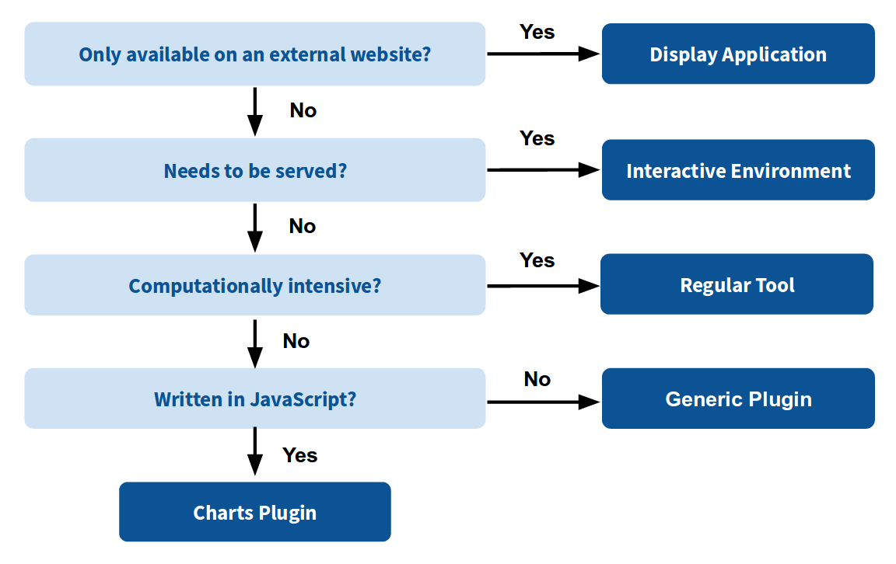
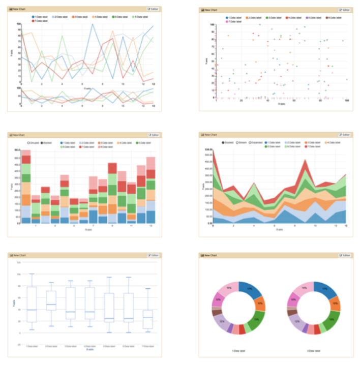
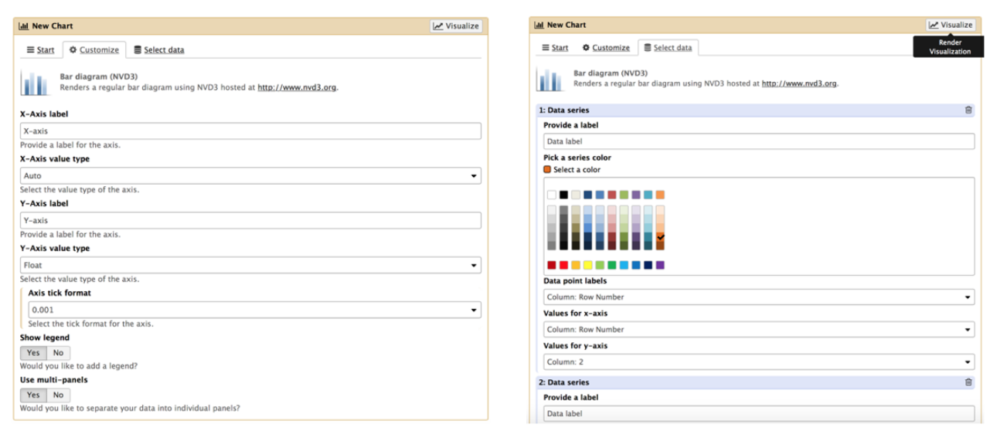
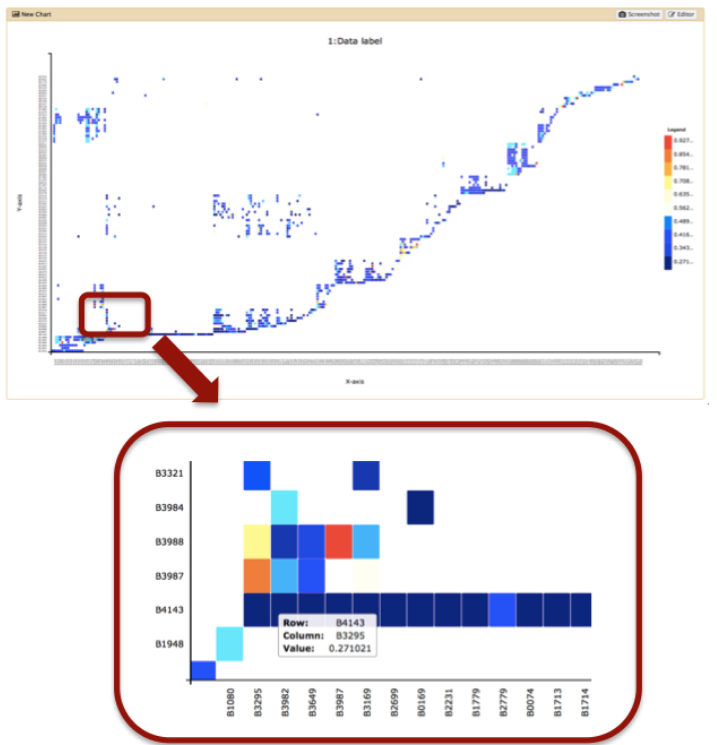
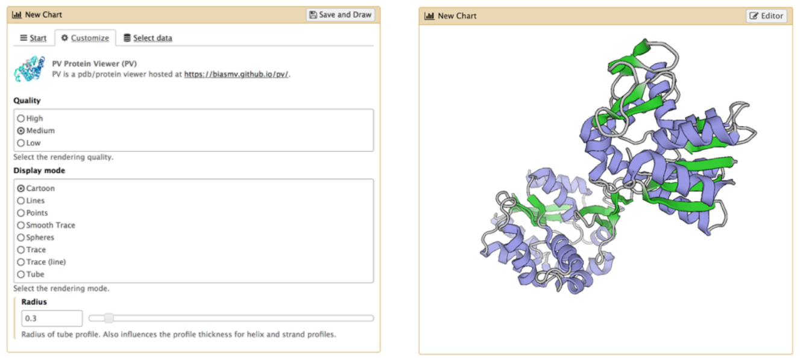
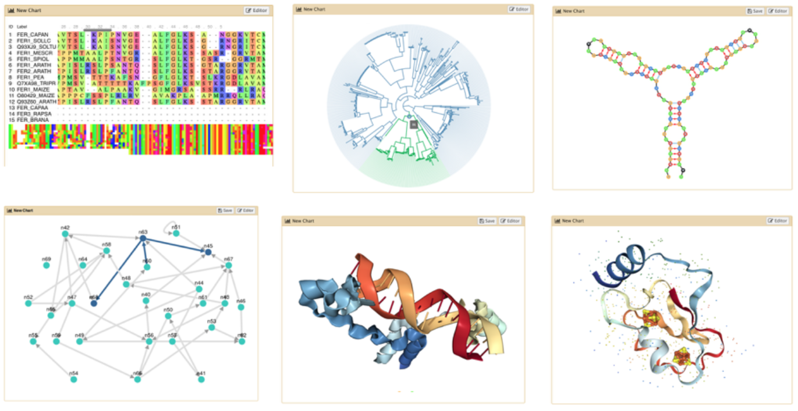
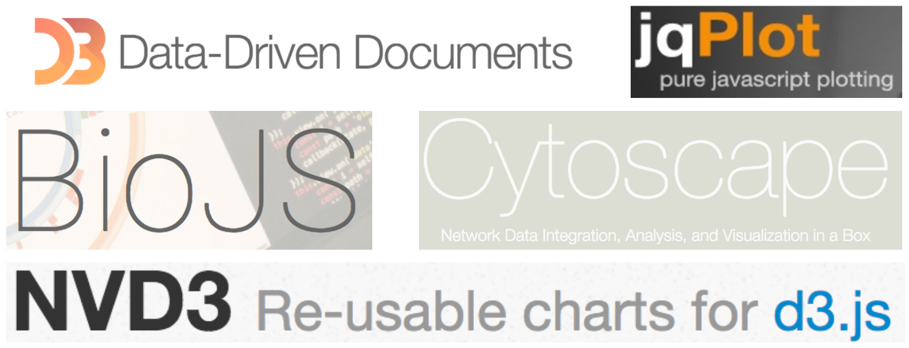

Visualizations: JavaScript Plugins
Contributors
 Saskia Hiltemann
Saskia Hiltemann  Youri Hoogstrate
Youri Hoogstrate  Björn Grüning
Björn Grüning  Aysam Guerler
Aysam Guerler  Dannon Baker
Dannon Baker
Questions
How can I make a custom JavaScript plugin?
Objectives
Learn how to add custom JavaScript plugins using the Galaxy Charts framework
Javascript Plugin Development in Galaxy
Tutorial Overview
-
Why visualization?
-
What are the available visualization types and which one should I use?
-
Introduction to Charts
-
Step-by-step guide to adding new visualizations
Why visualizations?

X mean: 54.26, X SD: 16.76
Y mean: 47.83, Y SD: 26.93
Corr: -0.06
Speaker Notes Anscombe’s quartet, all these datasets have same mean, standard deviation and correlation, yet when visualizing them it is revealed they have vastly different structures.
Types of visualizations in Galaxy
- Trackster - built-in genome browser
- Display applications
- UCSC Genome Browser
- IGV
- Galaxy tools
- JBrowse
- Krona
- Visualization plugins
- Charts
- Generic
- Interactive Environments
- Jupyter/Rstudio
- IOBIO (bam/vcf visualizations)
- Phinch (metagenomics visualizations)
Which should I use?

Charts Visualization Framework
Charts
A shared interface for a wide range of pure JavaScript visualization types i.e. bar diagrams, pie charts, scatter plots, heat maps and others.

Reference: https://www.nvd3.org , https://www.jqplot.com
Chart Configuration - Bar chart example

If a plugin is unavailable, custom visualization types like this heat map here can be added.

Charts is able to pre-process large-scale data behind the scenes.
Showing Protein-Protein Interaction data from http://www.compsysbio.org/bacteriome/ .
Charts - PDB viewer example


Community-driven plugins

Video Example
Speaker Notes click the image to run the video
Key Points
- Charts is a pluggable extension system for JS-only visualizations
- With three key files we can integrate any JS-only visualization into Galaxy
Thank you!
This material is the result of a collaborative work. Thanks to the Galaxy Training Network and all the contributors! This material is licensed under the Creative Commons Attribution 4.0 International License.
This material is licensed under the Creative Commons Attribution 4.0 International License.